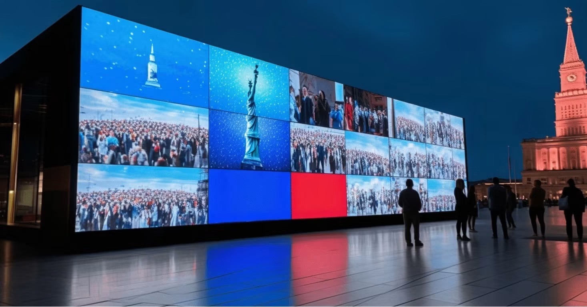
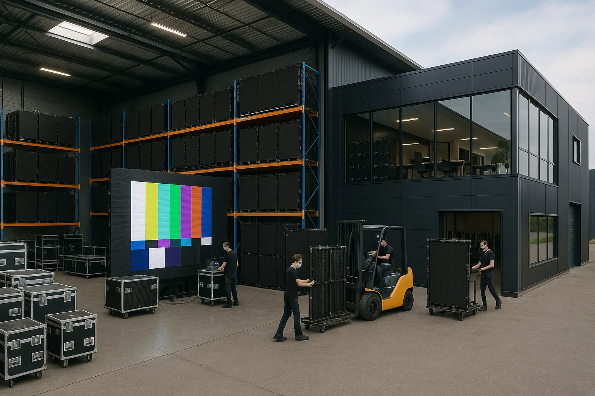

By Cassie
What does an Ivory Coast LED display importer need to know? Importing LED displays into Ivory Coast means obtaining a certificate of conformity under the pre-shipment verification programme, clearing goods through Abidjan, and specifying equipment that survives a hot and humid tropical climate. This 2026 guide explains the process from the factory to the site.
Ivory Coast is one of the larger economies in West Africa and the commercial hub of the francophone region. Demand for LED displays comes from advertising and outdoor media, from banking and telecoms, from retail and hospitality, and from public and infrastructure projects. Most equipment is imported, and the market is served by distributors and systems integrators.
An Ivory Coast LED display importer who prepares the conformity certificate before dispatch clears cargo without difficulty. The requirement that catches new importers out is the pre-shipment verification of conformity, which must be arranged at origin rather than after the goods have arrived at the port.
Importers in Ivory Coast operate through a registered business and a customs broker, and declarations are filed through the customs system used at the port. The main gateway is the port of Abidjan, one of the largest in West Africa, with San Pedro handling additional volumes. The importer of record is responsible for the accuracy of the classification, the value, and the origin.
Duty is assessed on the customs value, and a series of levies applies on top, including a statistical charge and a regional levy. Value added tax is charged at the standard rate. Because the country uses the CFA franc, which is pegged to the euro, currency movement is less of a risk than in some neighbouring markets, but the freight cost still matters.
| Step | What Is Required | Who Handles It |
|---|---|---|
| Business registration | Registered importing company | Importer |
| Broker appointment | Licensed customs broker | Importer |
| Import declaration | Entry with classification and value | Broker |
| Certificate of conformity | Pre-shipment verification of conformity | Supplier and importer |
| Duty and VAT | Assessed on the customs value | Importer |
| Inland delivery | Transport to the site or warehouse | Importer or broker |
Prepare the documents before the goods arrive. A shipment that reaches Abidjan without a certificate of conformity is held while the paperwork is arranged, and storage charges accumulate daily on a container that cannot be cleared.
Ivory Coast operates a pre-shipment verification of conformity programme for regulated products. The importer or the supplier arranges inspection and testing at origin through an accredited body, and a certificate of conformity is issued for the shipment. Without that certificate the goods cannot clear customs, and a destination inspection may be required instead, at greater cost and delay.
The national standards body, CODINORM, provides the framework within which the programme operates. Ask the supplier to arrange the inspection before dispatch and to send the certificate with the shipping documents, because the process is designed to happen at origin and cannot be retrofitted easily after the container has sailed.
| Requirement | What It Covers | Evidence to Hold |
|---|---|---|
| Certificate of conformity | Pre-shipment verification of conformity | Certificate for the shipment |
| Safety test report | Electrical safety | Report naming the offered model |
| EMC test report | Electromagnetic compatibility | Report naming the offered model |
| RoHS evidence | Hazardous substance limits | Supplier declaration and test data |
| Technical file | Drawings and specifications | Complete file held by the importer |
| French documentation | Installer and market information | Manual and labelling text |
Documentation should be provided in French for the market. For a professional installation the installer manual matters most, because a team that cannot read the wiring and calibration instructions makes avoidable errors on a site where technical support is far away.
Duty is assessed on the customs value, normally the transaction value adjusted to the agreed Incoterm. A suite of levies applies on top of the customs duty, and value added tax is charged on the duty-paid value. Because the country uses the CFA franc pegged to the euro, the exchange risk is lower than in markets with a floating currency, but freight and port costs still dominate.
| Cost Element | Basis | Notes |
|---|---|---|
| Customs duty | Commodity code and customs value | Confirm the rate for the specific code |
| Statistical and regional levies | Percentage of the customs value | Add to the duty calculation |
| Value added tax | Value plus duty and levies | Recoverable for registered businesses |
| Broker and clearance fee | Per declaration | Varies by broker and volume |
| Port and storage | Per day after the free period | Rises quickly if documents are late |
| Conformity inspection fee | Per shipment | Budget for the origin inspection |
| Inland transport | By distance and size | Confirm delivery to the final site |
Where the screen is destined for a site outside Abidjan, the inland leg can be long and the road conditions variable, particularly during the rainy season. Model the delivered cost to the actual city and add a buffer for weather delays rather than quoting to the port.
Most importers work through a licensed customs broker who files the declaration and handles the port formalities. Choose a broker who understands electronic goods rather than one who handles general cargo, because the classification of a display, its power supply and control hardware, and its mounting steel differs and each line carries its own treatment.
Give the broker the complete document pack before dispatch, including the invoice, the packing list, the bill of lading, and the certificate of conformity. A shipment held at the port for a missing document accrues storage charges, and demurrage at a busy West African port runs quickly.
Ivory Coast has a tropical climate with high temperatures and humidity throughout the year and two rainy seasons. The combination of heat, moisture, and heavy rain is the dominant specification challenge, and sites near the coast add salt air while inland sites during the harmattan add fine dust.
For Ivorian sites, humidity and salt-laden coastal air make sealed cabinets the deciding factor: the COB EF outdoor series (IP65, 3000 nits) and the COB ZH touring series (sealed, 3400–4000 nits) are built for exactly this duty.
| Condition | Risk | Specification Response |
|---|---|---|
| Tropical heat | Thermal stress on power supplies | Higher temperature rating and derating |
| High humidity | Condensation inside cabinets | Acclimatisation, ventilation, conformal coating |
| Heavy rainy seasons | Water ingress | High ingress rating and sealed cabinets |
| Coastal salt air | Accelerated corrosion | Corrosion-protected hardware and connectors |
| Harmattan dust | Blocked cooling paths | Filtration and a cleaning schedule |
| Unstable power supply | Driver and power supply failure | Wide-input supplies and surge protection |
Power quality deserves attention. Voltage variation and surges are common, so specify wide-input power supplies and surge protection, and consider an uninterruptible supply for high-value installations. A screen that fails in the first rainy season is usually a power or sealing problem rather than a panel problem.
Ask every candidate the same questions and record the answers. For Ivorian projects the conformity arrangement, the thermal and humidity specification, and the service plan matter as much as the price, because a fault on a remote site is expensive to resolve.
| Question | What a Strong Answer Looks Like | Warning Sign |
|---|---|---|
| Conformity arrangement | Inspection arranged at origin before shipment | Conformity ignored until arrival |
| Thermal and humidity rating | Stated range and ingress rating | Temperate ratings only |
| Power supply specification | Named brand and wide input range | Brand only, no part number |
| French documentation | Supplied with the goods | English only |
| Spare parts availability | Stated period in writing | No commitment given |
| Service response | Stated time by fault severity | Answer avoided |
Confirm the components in writing and require written approval for any substitution. Component substitution is common during shortages, and on a hot and humid site a changed power supply or connector can fail within a single season.
Each mistake is inexpensive to avoid during planning and costly after the goods land. An Ivory Coast LED display importer who arranges the conformity certificate, plans for the climate and the power supply, and models the delivered cost avoids most of them.
Asia Vision Technology manufactures LED displays in Shenzhen and supplies importers, distributors, and contractors across West Africa. The factory arranges the inspection and testing needed for the certificate of conformity, supplies cabinets designed for hot and humid conditions, and holds spare parts for the stated warranty period.
For Ivorian projects the company supplies outdoor displays for advertising, fine pitch screens for retail and corporate work, and rental cabinets for events. OEM and ODM production is available for distributors building their own range, with documentation supplied for the market.

Related reading: Nepal LED Display Importer Guide 2026: NBSM and Customs